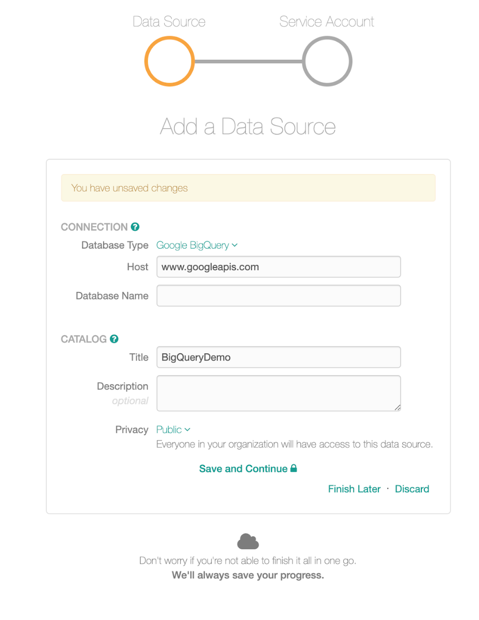
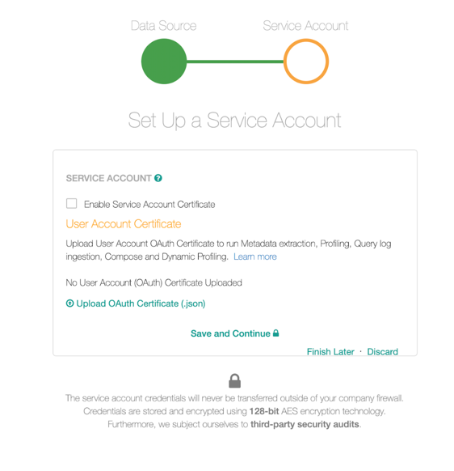
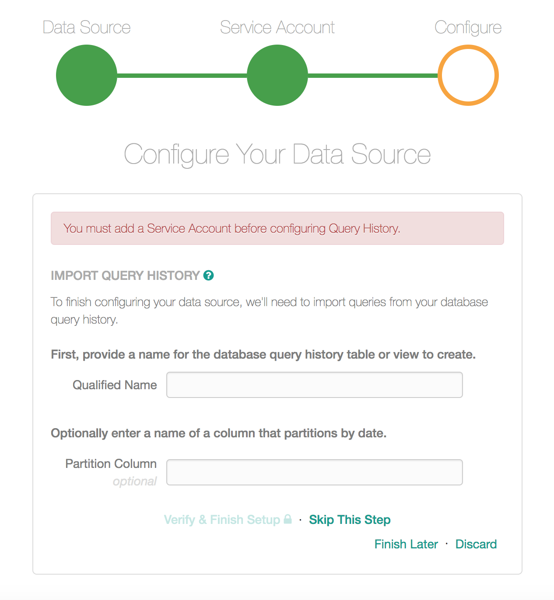
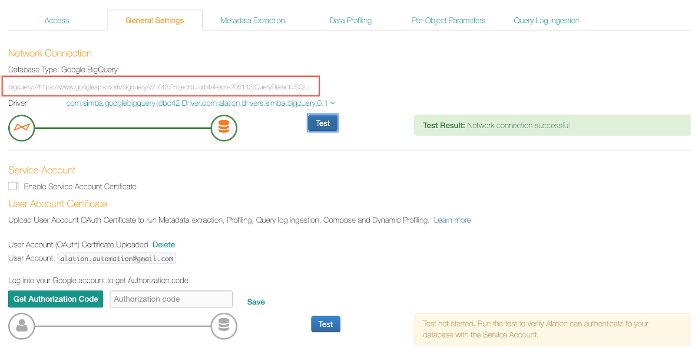
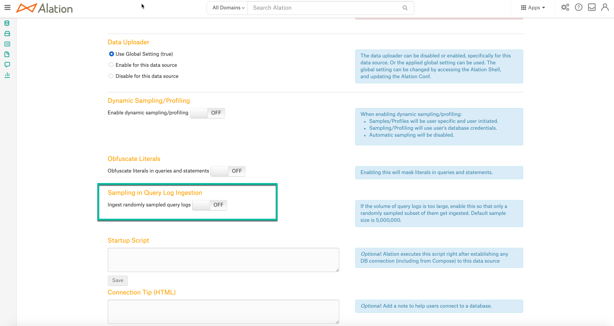
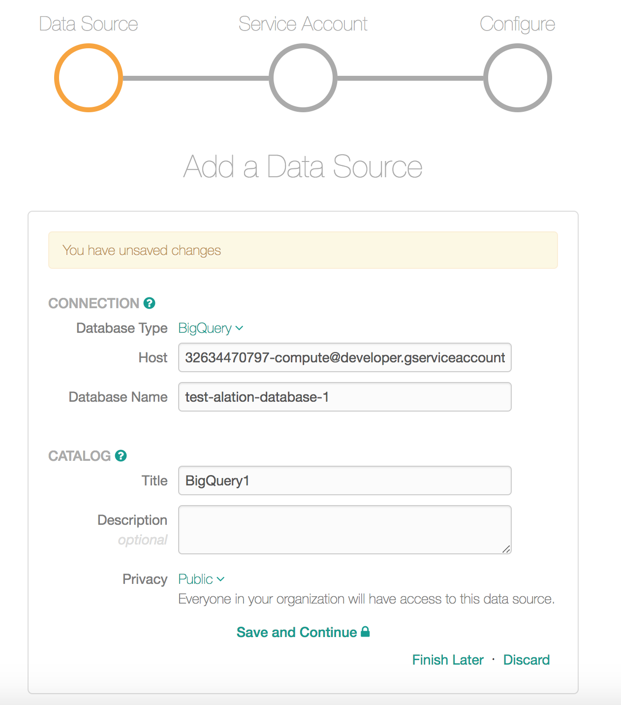
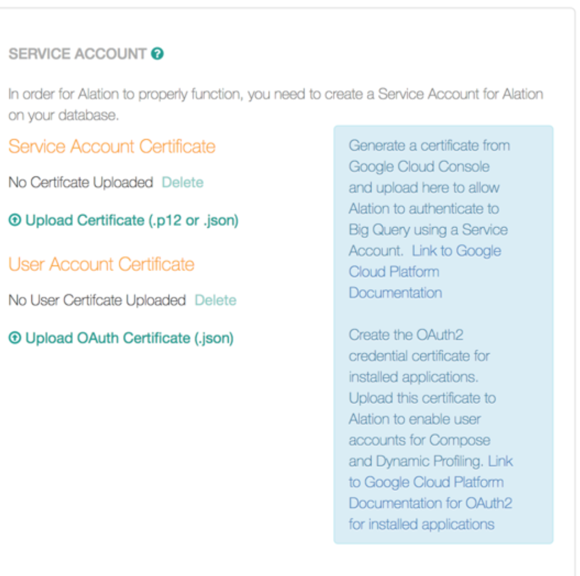

Google BigQuery Setup in Alation¶
Applies from V R6 (5.10.x)
For earlier versions, see Setup in Alation V R5 (5.9.x) and Below.
To add a Google BigQuery data source to the Alation Catalog:
Go to Sources and on the Sources page, on the upper-right, click Add.
Provide the information on the first Add a Data Source screen and click Continue Setup. This will bring up the Add Data Source wizard.
Data Source Wizard Step 1: Connection Information¶
{kind=link}
Select Google BigQuery as Database Type.
Host the Host field is auto-populated with value
www.googleapis.com. This field cannot be edited.In the Database Name field, provide your Project ID. The project must be billing-enabled.
Provide the remaining information and click Save and Continue. This will bring up Step 2 of the wizard.
Data Source Wizard Step 2: Authentication¶
{kind=link}
Leave the Enable Service Account Certificate checkbox clear if you are using a user account for authentication. If you want to use a service account, see Authenticating with a Service Account.
Under User Account Certificate, click the link Upload OAuth certificate (json) and upload the certificate.
Note
See Generate User Account Certificate for details on how to generate the user account certificate in GCP.
Click Get Authorization Code. You will be prompted to log in to the Google Account:
After you sign in, the following screen is displayed:
Click Allow.
On the next screen that opens, copy the authorization code:
Paste the authorization code in the field to the right of the Get Authorization Code button:
Click Save. This saves the authorization code. This field cannot be left blank.
Click Save and Continue. This leads you to the Access tab of the data source Settings page.
{kind=link}
{kind=link}
{kind=link}
{kind=link}
Authenticating with a Service Account¶
Select the Enable Service Account Certificate checkbox. The Service Account Id field will be revealed.
Enter the Service Account Id.
Click Save.
Upload the service account certificate key. See Create a Service Account and Generate a Key for details.
{kind=link}
To upload a different service account certificate, click the Delete button. This deletes the currently uploaded service account certificate.
If you want to also use the user account, proceed to provide the OAuth certificate. Follow the steps in Data Source Wizard Step 2: Authentication , starting with step 2.
Data Source Wizard Step 3: Configure QLI¶
There are no specific requirements to set up QLI. Click Skip This Step:
{kind=link}
When the Wizard is complete, run Metadata Extraction, Profiling, and Query Log Ingestion on the respective tabs of the Settings page.
Settings Page¶
General Settings¶
The General Settings page allows you to validate the connection, and upload a new service account certificate or a user account certificate:
{kind=link}
On the General Settings page, DO NOT change the
values bigquery://https://www.googleapis.com; and QueryDialect=SQL; or
profiling will fail:
Include the Timeout=<Timeout_Value> parameter in the above URI to increase the timeout if large datasets have to be extracted.
Note
If the user account certificate has not been uploaded, you will not be able to query the source in Compose: there will be an authentication error from GCP when you try to connect to your GCP source.
To resolve this, upload the User Account Certificate on the General Settings tab. This needs to be a user account that has access to the Project you want to query.
Metadata Extraction¶
To extract metadata, go to the Metadata Extraction tab. Follow the prompts on this tab to perform MDE.
Note that when you do Fetch Schemas, Alation will fetch datasets from all the projects the user or service account used for authentication has access to in GCP.
The extracted metadata of Google BigQuery data source constitutes metadata of projects, datasets, tables and views, and columns of tables and views. From 2021.3, materialized views will also be extracted during MDE. Lineage is not supported for materialized views.
Note
The STRUCT data type is supported from version 2020.3.
From 2022.1, the description of the STRUCT data type will be extracted from the source comments during the metadata extraction and added to the Description field on the Catalog pages of column objects.
Default Metadata Extraction for Google BigQuery extracts only the SELECT queries from view definitions. To extract complete view definitions for Google BigQuery views and materialized views, perform additional configuration on the Alation server using alation_conf and setting the feature flag enable_extraction_of_full_view_definition_for_gbq to True. Refer to Extract the Complete View Definition for more details.
Important
The user or service account used for MDE requires access to the INFORMATION_SCHEMA tables in the Google BigQuery data source to extract complete view definitions. This operation adds to the cost of MDE, refer to Information Schema Pricing in BigQuery documentation.
Limitations of Metadata Extraction:
You cannot perform the Include and Exclude extraction operation at the same time.
You cannot perform extraction of a schema if the schema name begins with an underscore.
Alation does not extract descriptions of schemas and tables.
Data Profiling¶
Go to the Data Profiling tab to perform profiling. Alation supports table and column profiling. Standard SQL is used for profiling and supported by the Simba driver.
Alation does not support profiling for partition tables and column profiling for the Geography data type.
Query Log Ingestion¶
Sampling in Query Log Ingestion is not supported for the Google BigQuery data source type. Sampling in Query Log Ingestion flag must be off when you perform Query Log Ingestion. Make sure that the flag is off in General Settings > Sampling in Query Log Ingestion.
Go to the Query Log Ingestion tab to perform query log ingestion.QLI is supported for Popularity, top users, Lineage, and surfacing the Filters and Joins information.
Setting up Database Authentication in Compose¶
Authentication for Compose uses the user account and goes using the Simba driver. This connection uses the OAuth certificate uploaded to Alation when the data source was configured. The OAuth certificate uploaded in the User Account section of the data source Settings > General Settings.
Note
If the user account certificate has not been uploaded, this will result in an authentication error in Compose. To resolve this, upload a user account certificate on the General Settings tab of the data source Settings page (this requires the Data Source Admin level access to the data source). Refresh the Compose page.
Every user will have to establish a connection to GBQ with their own Google credentials when they use Compose for the first time. However, in the GBQ query history, all Compose queries will be logged as run by the main user whose OAuth certificate is provided in the data source Settings even though individual Compose users authenticate in Compose using their own Google credentials. Individual query history will be available in Alation, but not in GBQ query log.
Ensure that you use the correct configuration for Compose URI:
DO NOT change
bigquery://https://www.googleapis.comProjectId=<Project ID> where <Project ID> is the Project ID of a billing-enabled Project.
Your default connection URL will look like this:
bigquery://https://www.googleapis.com/bigquery/v2:443;ProjectId=my-project-for-gbq-source;QueryDialect=SQL;
The default connection uses the Standard SQL parameter. See Using Standard or Legacy SQL below.
To connect in Compose,
Select the connection you want to use:
{kind=link}
Click the Refresh connection button for the selected connection:
In the Google Authorization dialog that opens, click Authorize:
On the next screen, choose the account you want to authorize with then click Allow:
Upon successful authentication with Google, an authorization code will be displayed. Copy and paste this code from the Google authentication window into the Code field in the Database Authentication window in Alation Compose and click Connect:
{kind=link}
{kind=link}
{kind=link}
{kind=link}
Note that if you receive errors when trying to authorize with Google, it may be:
404 error - page not found see Page Not Found (404) when authorizing with Google.
The app not verified by Google error see An authentication error when connecting in Compose.
Starting with V R6 (5.10.x), users can execute concurrent queries on Google BigQuery source.
Using Standard or Legacy SQL¶
Starting with V R6, Alation supports both Standard and Legacy SQL for GBQ data sources. You need to manually define the syntax you want to use in the Connection URI in Compose.
To define the syntax, change the parameter QueryDialect in the
Compose connection URI: QueryDialect=SQL or QueryDialect=BIG_QUERY. Refresh the Compose page and reconnect.
URI Example:
bigquery://https://www.googleapis.com/bigquery/v2:443;ProjectId=my-project-for-gbq-source;QueryDialect=SQL;
Setup in Alation V R5 (5.9.x) and Below¶
Data Source Wizard Step 1: Configure Connection¶
Host refers to the service account email and Database Name will be the Project ID:
{kind=link}
Data Source Wizard Step 2: Download Certificates¶
Use this section to upload the Service Account certificate and the User Account certificate.
{kind=link}
Data Source Wizard Step 3: Configure QLI¶
There are no specific requirements to set up QLI. Click Skip This Step.